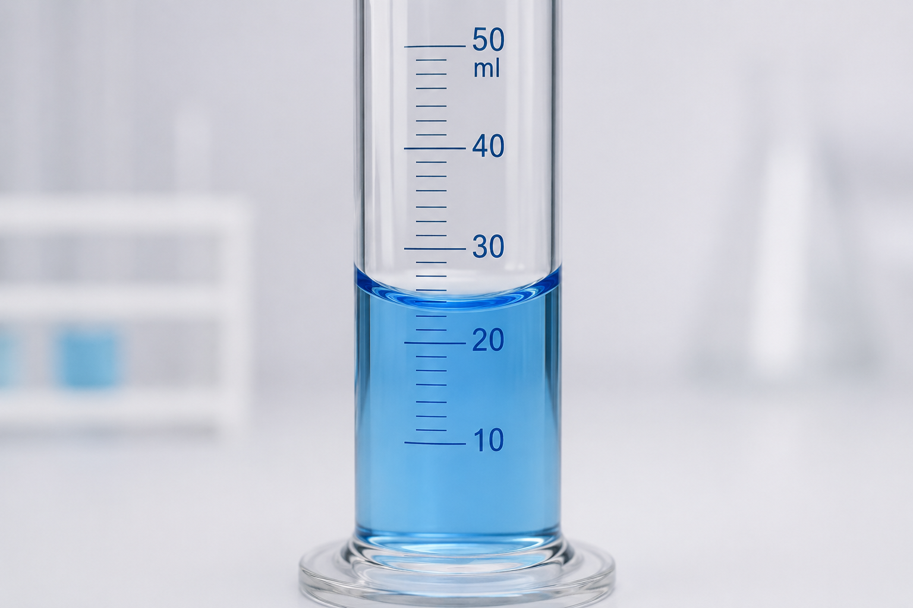
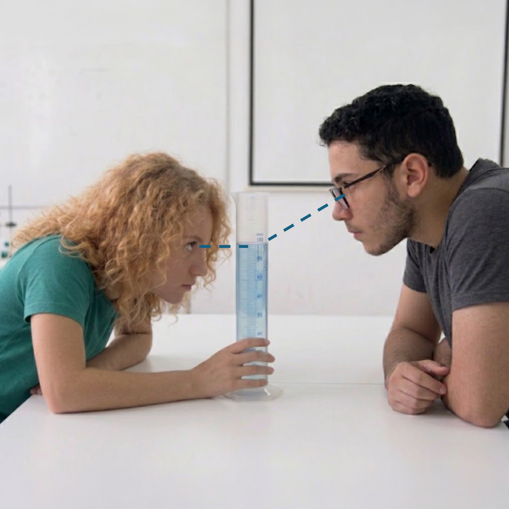
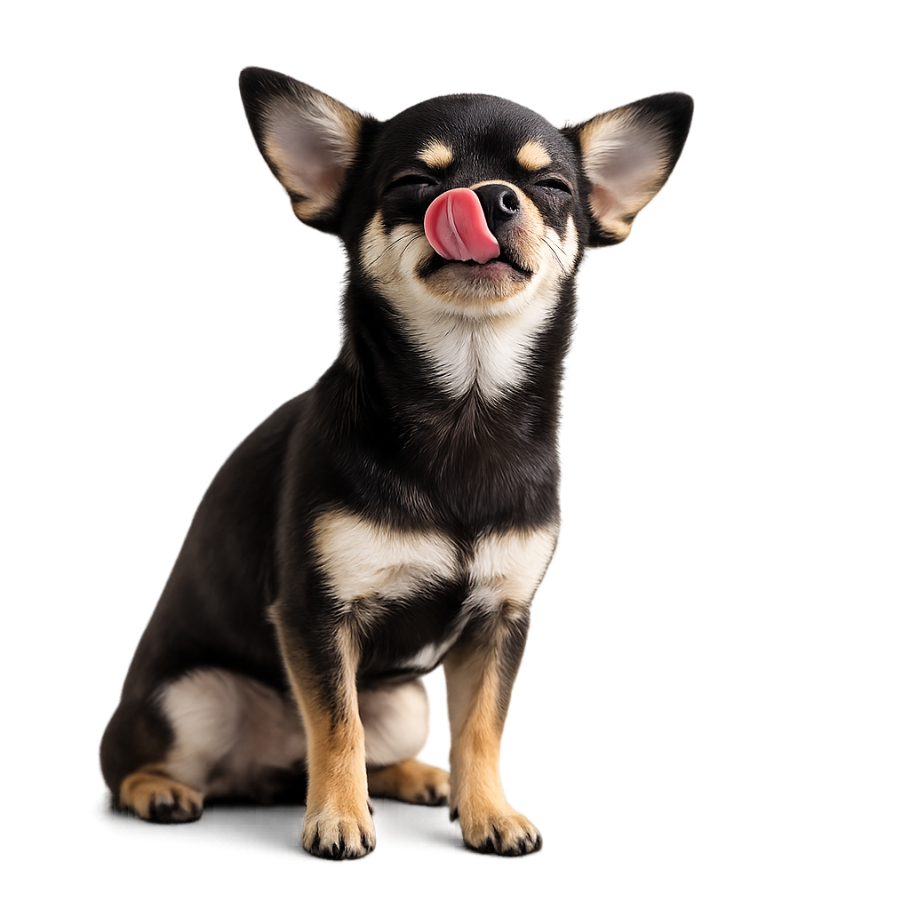

أنهينا مرحلة التعلم، سننتقل إلى التمرين الأول ونجيب عن
يجب الإجابة بشكل صحيح عن 4 أسئلة على الأقل.
الجزء المقعر من السائل
يظهر في الصورة مخبار مدرّج يحتوي على ماء. يلتصق الماء قليلًا بالجدار، ولذلك يشكل سطح السائل انحناءً.
اضغطوا على نقطة القراءة التي نقيس عندها.
أ. فوق الانحناء ب. على مستوى الانحناء ت. عند أدنى نقطة في الانحناء

نتيجة موثوقة
قاست دنيا كمية الماء نفسها 3 مرات وحصلت على النتائج التالية: 30، 28، 32 ملل.
أ. ما هو معدل القياسات الثلاثة؟
ب. هل القياسات موثوقة؟

انظروا إلى الصورة
قاس فادي وياسمين حجم سائل معين.
قرأ فادي 50 ملل. وقرأت ياسمين 48 ملل.
أي قياس صحيح؟
علينا قياس 10 ملل من السائل.
بأي أداة يمكننا قياس الكمية بدقّة أكبر؟

يعطي طبيب بيطري كلبًا صغيرًا دواء بجرعة 1.5 ملل.
أي أداة عليه أن يختار لقياس كمية الدواء بدقّة؟